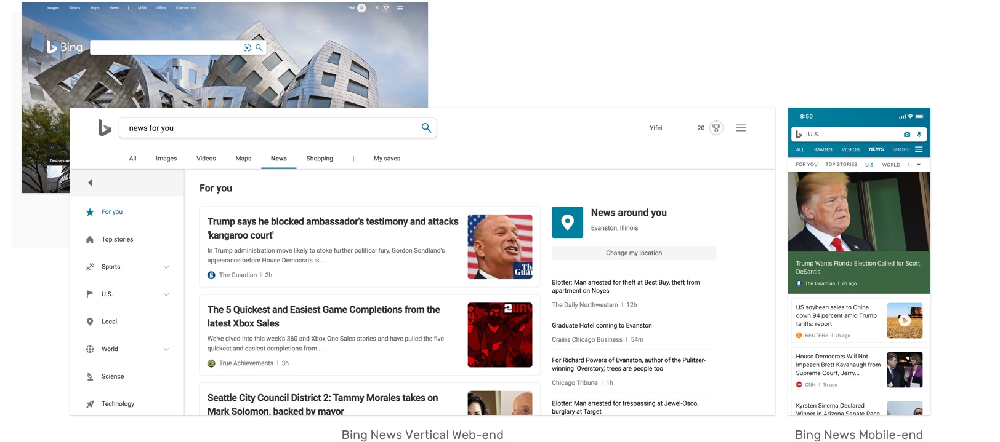
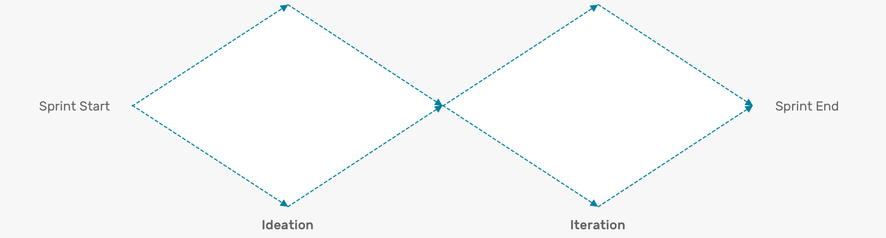
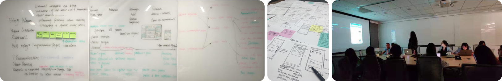

Faye Gong
I interned as a UX Design intern at Microsoft this summer, worked on product design of Bing.com News Vertical.
overview
PROJECT TYPE
Summer Internship
DURATION
June-September.2019
12 weeks
MENTOR
Yan Yan
Senior Designer
TOOLS
Paper & Pen
Sketch
Principle
Overall Plan: 1 Main Project+ 1 Passion Project
Focus Project
My initial goal of this internship was to learn how to do product design in a global company which was redifined as visioning and visualizing key user experiences and use cases for Bing.com News Vertical Mobile FY 2020 products.
I identified some unique value of Bing.com mobile end experience, defined Content Personalization cross-platforms user journey and functions, and designed features and interactions.
Background
Bing News is a news aggregator powered by artificial intelligence–is a part of Microsoft's Bing search engine,which processes billions of global searches.
Operating in the United States and other international markets, Bing News displays the latest news stories on Bing.com/News on desktop and mobile, the Bing Search app(Opal), and through enterprise streams such as the Outlook News Connector, PowerBI and Bing for business.
Process
Methods
1. Interviews
2. Academic Paper Reviews
3. Design Critique
4. Concept Feedback Sessions
Outcomes
I explored some design methods I never used before.
I regularly made whitleboarding sessions to present my exploration and results, like learning Bing News Vertical, Competitors Study, Design Exploration. I used paper prototyping to validate design independently. At my last day, I framed my works to one storyline with hi-fi designs and presented to my team collegues, managers and seniors from other teams.
Here are screens I delivered for my main mobile-end experience improvement project.

My project outcomes are under NDA and could be released publicly after implementation next year.
If you are interested in this project as a potential employer,feel free to reach out me at yifeigong2020@u.northwestern.edu to schedule a presentation.
Key Learnings
1. Design Alignment For Cross-platform Product
When a product has multiple ends on multiple devices, it's harder to determine a function in the different use cases and scenarios. Sometimes, we should wait for a feature aligning to all ends. Sometimes we should focus on one end and only iterate it till the new feature become mature. It reminds me to keep in mind that this function will be aligned to other ends when designing a new function. Thus, this new function shouldn't be only based on user behaviors of mobile devices. It's better to make it with better compatibility.
2. Interaction For Mobile Native And Mobile Web
Different end experience has different visual and interaction guideline. Even if for the mobile experience, I should consider the difference and familiarity between the native mobile app and mobile web in the browser. That requires me to balance the design pattern and user flow on each end. For example, it's better having less page jumping for mobile web browsing. So I chose to design the same feature with two shift tabs other than nesting pages on the native mobile app.
3. Balance Benefits And Efforts Designs Could Bring
As a design novice, it's easy to get into the excitement that there are a lot of design opportunities, so designing a lot of new features to fulfill those gaps. Actually, here is an important point should be thought a lot is what is the value your design could bring to user comparing with the current design. If it's going only to add on learning cost, that's definitely not the right design we should implement now. Be ready to provide designs in a range, know the pros and cons of each and answer the why behind them.
Designed and coded by Faye Yifei Gong | All Rights Reserved | @fayegong.xyz© 2016-2019